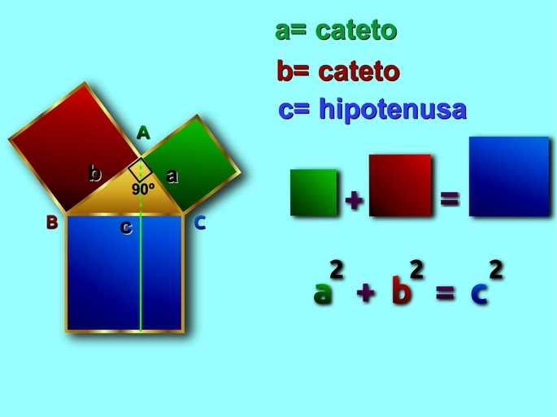

Alrededor del 530 a. C., Pitágoras de Samos y su escuela filosófica formalizaron y demostraron geométricamente
la relación entre los lados de un triángulo rectángulo. Aunque egipcios y babilonios ya usaban esta propiedad
más de mil años antes mediante cuerdas con nudos para lograr esquinas cuadradas perfectas en sus construcciones,
fue Pitágoras quien le dio el carácter de teorema matemático universal.
formula:

Establece que en todo triángulo rectángulo (el que tiene un ángulo de 90°), el área del cuadrado construido
sobre el lado más largo (hipotenusa) es igual a la suma de las áreas de los cuadrados de los dos lados menores
(catetos).
a² + b² = c²
Ejemplo: Si caminas 3 metros al norte y luego 4 metros al este, la distancia directa en diagonal hasta tu
punto de origen no es 7, sino 5 metros (√(3² + 4²) = √25 = 5).
Este teorema sirve para calcular la distancia más corta entre dos puntos en un plano, construir esquinas
perfectamente rectas y programar trayectorias en mapas o videojuegos.
UN VIDEO PARA COMPLETAR EL TEMA Y TERMINAR DE ENTENDERLO
Apolla al creador de contenido que ralizo el video